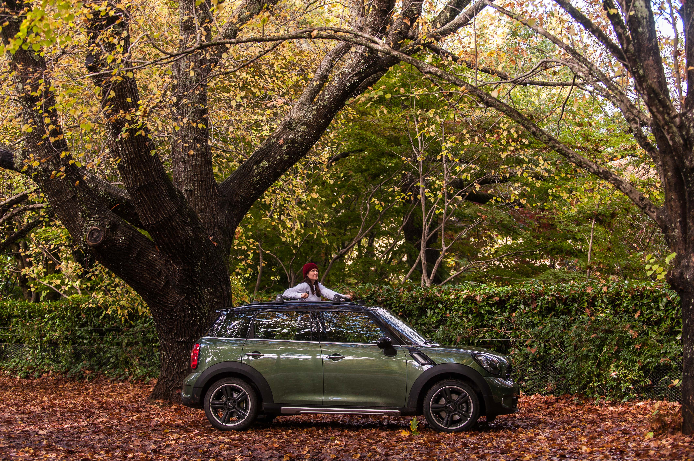

Features - The Boweress
World Heritage National Park
15 January, 2018
We have decided to escape the bump and grind and let loose to an Autumn paradise climbing up to the solitary yet exhilarating wilderness west of Sydney. Thankfully Mini decided to give us a pretty sick whip to get there. People have been escaping to the Blue Mountains for the last 200 years for a variety of reasons. (Lawson, Blaxland and wentworth) Whether to improve their health, escape the bustle of the city or explore the unknown. Having grown up here I am fully aware of it’s natural beauty yet might not have appreciated it as much as a teenager. Im back to see it through fresh older eyes.
Sitting on the outer edge on the other side of the Great dividing range, sits the last suburb of the Blue Mountains, Mount Wilson. A magical secluded paradise of gardens and epic beauty, this place was made for soul searching getaways. Each hairpin turn and straight open road is leaves you wanting more and more from the sublime driving surrounds. The Mountains are at their best, the height of Autumn providing crisp clear days filled with a mixed colour palette for the eyes to feast upon.
But the Blue Mountains isn’t all about picturesque drives and manicured gardens, there is a vulnerability to it and adventure waiting for those who choose to seek it.
Working our way through the sudden roll in of mist, this is what we wanted, fog lights turned on, we are heading towards our dream destination. Upon reaching Govetts leap, one of the most beautiful views in the world you can see why this has been a desirable haunt for all types from the early 1800’s to present day. The air is impeccable, I can feel the city smog escaping as I breathe in blue Mountain mist whilst watching the sun rise over a blanket of prehistoric trees and epic cliff face.
We are now at the highest point of the mountains, 2 yellow tailed black cockatoos fly above towards bridal veil falls running fast due to the overnight rain. The sheer wilderness and grandeur are mesmerizing. Big things have happened in these valleys.
Descending into Megalong Valley in what resembles a Sub tropical rainforest, the vast difference in natural scenery in the mountains is unfathomable, We set the car into sport mode (why not?) for the windy journey ahead. Peeping out of the rainforest like environment we now find ourselves in pure country. Looking up to where the famous recently refurbished Hydro Majestic sits teetering off the Grose Valley escarpment, the sheer size of the mountains makes you feel quite small. Encountering the locals consisting of cows and horses we are below the mist now, deep in the valley of what seems to be the road less travelled.
We wind our way back up to the town of Blackheath. At an elevation of 1065, the disiduos trees have turned and there’s a freshness in the air like no other. The trees are a definite drawcard for lovers of all things beautiful. Driving through the town the sweeping vast views let us know we’ve made it, we’re definitely above sea level in a crisp open air paradise.
In case you were thinking of extending your stay which crossed our minds multiple times, some notable attractions are below. You won’t be disappointed.
Hassan Lookout
Echo Point
Scenic World
The golden staircase (Katoomba)
For the experienced walker, National Pass (Wentworth Falls) and the 6 foot track (Katoomba)
